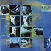

Celtic Lyrics Corner > Artists & Groups > Cliar > Grinn Grinn > Iain Ghlinn Cuaich
|  | Iain Ghlinn Cuaich |
| Credits : | Arranged by Arthur Cormack, Ingrid Henderson, Hector Henderson, Mary Ann Kennedy, Maggie MacDonald & Ross Martin |
| Appears On : | Grinn Grinn |
| Language : | Gàidhlig (Scottish Gaelic) |
| Other Versions : |
"
Iain Ghlinn' Cuaich
" on Capercaillie's album
Sidewaulk
" Iain Ghlinn Cuaich " on Flora MacNeil's album Craobh Nan Ubhal " Iain Ghlinne Cuaich " on Rachel Walker's album Bràighe Loch Iall |
| Lyrics : | English Translation : |
| O Iain Ghlinn Cuaich | Oh Iain of Glen Quoich |
| Fear do choltais cha dual da fàs | It is not often that one encounters your like |
| Cùl bachlach nan dual | That ringletted head of hair |
| 'S e gu camlùbach suas gu bhàrr | Curled right to the roots |
| 'S i do phearsa dheas ghrinn | It was your beautiful, handsome appearance |
| A dh'fhàg mi cho tinn le gràdh | That left me lovesick |
| 'S nach eil cron ort ri inns | And there is no fault to be noted |
| O mhullach do chinn gu d' shàil | About you from head to toe |
| Ach an trian dhe do chliù | I can't begin to express |
| Cha chuir mise a rùin an cèill | A third of your worth |
| 'S caoimh faiteal dhe d' ghnùis | Better to catch a glimpse of your face |
| Na ùr choille do dhriùchd ri grèin' | Than the new-grown dew-laden forest in sun |
| Gum b' e miann mo dhà shùil | The desire of my eyes |
| A bhith 'sealltainn gu dlùth a d' dhèidh | Is to catch close sight of you |
| 'S math a b' airidh mo rùn-s' | My love deserves a crowned heiress |
| Air ban-oighre a' chrùin fo sgèith | Under his protection |
| Iain, Iain a ghaoil | Iain, Iain, my love |
| Cuim' a leig thu mi faoin air chùl? | Why did you turn your back on me? |
| Gun ghuth chuimhn' air a' ghaol | Without a thought for the love |
| A bh' againn araon air tùs | That we once had |
| Cha tug mise mo spèis | I never gave my respect |
| Do dh'fear eile fon ghrèin ach thu | To any other man under the sun but you |
| Is cha toir as do dhèidh | And neither will I |
| Gus an càirear mo chrè 's an ùir | 'Til my body is beneath the ground |
| Ged a chinn thu rium fuar | Although you have turned cold towards me |
| Bheil thu Iain, gun truas 's mi 'm chàs? | Are you, Iain, without pity, and I in this state? |
| 'S a liuthad latha agus uair | Despite the many days and times |
| Chuir thu 'n cèill gum bu bhuam do ghràdh | You told me our love was forever |
| Ach ma chaochaill mi buaidh | But if my effect on you has changed |
| 'S gun do choisinn mi t' fhuath na t' fhearg | And earned your hate or anger |
| Tha mo bheannachd ad dhèidh | I still send you my blessing |
| 'S feuch an tagh thu dhut fhèin nas fheàrr | And see that you choose a better one for yourself |